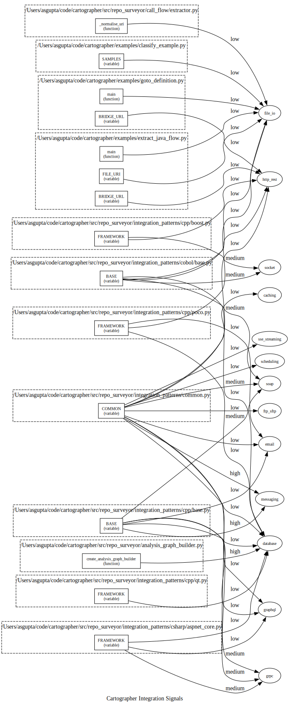

16 languages · 13 integration types · 90+ frameworks
You inherit a large codebase. You need to answer:
Map.get() isn't a Javalin routeA Python library that statically scans a repository and produces a structured understanding of its technology landscape — without running any code.
Languages, frameworks, package managers, infrastructure, and 13 types of system integration points
Map every integration signal to its owning code symbol (class, method, function)
Determine signal direction: inward (we expose), outward (we consume), or ambiguous
All 13 integration types covered for modern languages. Pascal covers 9 base types. COBOL/PL/I cover 6 mainframe-relevant types.
from repo_surveyor import survey
report, symbols, signals, resolved, concretised = survey(
"/path/to/repo",
languages=["Java", "Python"],
)SurveyReportCTagsResultIntegrationDetectorResultCompositeIntegrationSignalResolutionResultStages 1–2 feed context into 3–6. Stage 4 reduces duplicates before the expensive downstream stages.
Walk the repo looking for indicator files:
pom.xml → Java + Mavenpyproject.toml → Python + PoetryCargo.toml → Rust + Cargo*.csproj → C# + NuGetThen parse those files to extract framework dependencies (not naive substring matching).
Each marker is scoped to its directory — critical for monorepos where backend/ is Java/Spring and frontend/ is TypeScript/React.
Also detects: Docker, Terraform, Kubernetes (via YAML apiVersion: markers)
Shell out to Universal CTags with JSON output:
ctags --output-format=json \
--fields=* --extras=+q -R .Produces a list of CTagsEntry objects:
Fast, battle-tested, supports 100+ languages, and gives us line ranges for every symbol.
These line ranges become the spatial index used in Stage 4 to resolve signals to symbols.
Two sub-stages for each source file:
Before applying any regex, each line is classified into a syntax zone:
| Zone | Action |
|---|---|
CODE | Scan |
COMMENT | Skip |
STRING_LITERAL | Skip |
IMPORT | Skip |
PACKAGE_DECLARATION | Skip |
# tree-sitter AST walk to build zone map
def build_syntax_range_map(root_node, source_lines):
ranges = []
stack = [root_node]
while stack:
node = stack.pop()
zone = _classify_node(node.type)
if zone is not None:
effective = _effective_range(
node, zone, source_lines
)
if effective is not None:
ranges.append(effective)
continue # don't recurse into matches
stack.extend(reversed(node.children))
ranges.sort(key=lambda r: r.start_row)
return SyntaxRangeMap(ranges=tuple(ranges))(?i)\bkafka\b, (?i)\bredis\b
@WebService, import grpc
@RestController, @app.get
Double gating: framework must be in the directory's tech stack AND imported in the file
FRAMEWORK = FrameworkPatternSpec(
name="Spring",
patterns={
IntegrationType.HTTP_REST: {
PatternKey.PATTERNS: [
(r"@RestController", Confidence.HIGH, SignalDirection.INWARD),
(r"@GetMapping", Confidence.HIGH, SignalDirection.INWARD),
(r"@PostMapping", Confidence.HIGH, SignalDirection.INWARD),
],
},
IntegrationType.MESSAGING: {
PatternKey.PATTERNS: [
(r"@KafkaListener", Confidence.HIGH, SignalDirection.INWARD),
(r"KafkaTemplate", Confidence.HIGH, SignalDirection.OUTWARD),
],
},
IntegrationType.DATABASE: {
PatternKey.PATTERNS: [
(r"@Repository", Confidence.HIGH, SignalDirection.OUTWARD),
(r"JdbcTemplate", Confidence.HIGH, SignalDirection.OUTWARD),
(r"Neo4jRepository", Confidence.HIGH, SignalDirection.OUTWARD),
],
},
},
)Each pattern carries: regex confidence direction
@dataclass(frozen=True)
class IntegrationSignal:
match: FileMatch # file, line number, line content, language
integration_type: IntegrationType # one of 13 types
confidence: Confidence # HIGH / MEDIUM / LOW
matched_pattern: str # the regex that fired
entity_type: EntityType # FILE_CONTENT
source: str # "common", "Java", or "Spring"
direction: SignalDirection # INWARD / OUTWARD / AMBIGUOUSHTTP/REST, SOAP, messaging, database, gRPC, GraphQL, sockets, file I/O, email, caching, SSE, FTP/SFTP, scheduling
HIGH: framework annotation
MEDIUM: language-level pattern
LOW: generic keyword
INWARD: we expose it
OUTWARD: we consume it
AMBIGUOUS: can't tell from pattern alone
Codescry run against its own codebase
Symbols grouped by file (dashed clusters), integration types as teal nodes. Edge weight = confidence.
A single source line can match multiple patterns (e.g. both http_rest and database). Before symbol resolution or concretisation, duplicates are merged:
def _deduplicate_detector_result(result):
file_content = [s for s in result.integration_points
if s.entity_type == EntityType.FILE_CONTENT]
non_file_content = [s for s in result.integration_points
if s.entity_type != EntityType.FILE_CONTENT]
composites = deduplicate_signals(file_content)
return IntegrationDetectorResult(
integration_points=non_file_content + composites,
files_scanned=result.files_scanned,
)Both IntegrationSignal and CompositeIntegrationSignal satisfy the SignalLike protocol, so all downstream consumers work uniformly:
Each composite preserves all original match metadata while eliminating redundant processing.
Each signal has a file + line number.
Each symbol has a file + line range.
Resolution = find the narrowest containing symbol for each signal.
@dataclass(frozen=True)
class SymbolIntegrationProfile:
symbol_name: str
symbol_kind: str # class, method, function
symbol_path: str
integrations: tuple[SymbolIntegration, ...]Not just "there's a Kafka call on line 47" but:
"OrderService.processOrder() has 3 integration points: Kafka outbound, REST inbound, and database outbound"
This is the per-symbol integration profile.
Some patterns can't determine direction from regex alone. The concretiser classifies each signal in two stages:
Classifier: TF-IDF (word + char n-grams) + Logistic Regression
No API calls at inference. Serialised with joblib.
languages.json is the single source of truth:
{
"Ruby": {
"extensions": [".rb"],
"indicator_files": {
"Gemfile": {
"package_managers": ["Bundler"],
"parser": "gemfile"
}
},
"framework_patterns": {
"rails": "Rails",
"sinatra": "Sinatra"
},
"integration_module": "ruby"
}
}Framework patterns auto-discovered via pkgutil:
integration_patterns/
ruby/
__init__.py # auto-discovers siblings
base.py # BASE: BasePatternSpec
rails.py # FRAMEWORK: FrameworkPatternSpec
sinatra.py # FRAMEWORK: FrameworkPatternSpec
cfg_roles.json # CFG node-type mappingsDrop in a new .py file exporting FRAMEWORK and it's automatically picked up.
Instead of writing a CFG builder per language, map tree-sitter node types to 12 universal roles:
cfg_roles.json{
"_meta": {"switch_fallthrough": true},
"block": "sequence",
"if_statement": {
"role": "branch",
"condition": "condition",
"consequence": "consequence",
"alternative": "alternative"
},
"for_statement": {
"role": "loop",
"condition": "condition",
"body": "body",
"initializer": "init",
"update": "update"
},
"return_statement": "return",
"break_statement": "break"
}Simple form: "break_statement": "break"
Extended form: maps semantic slots to tree-sitter child field names:
| Slot | Purpose |
|---|---|
condition | Branch/loop test |
consequence | True branch |
alternative | Else branch |
body | Loop/switch body |
handler | Catch block |
finalizer | Finally block |
Same algorithm, different JSON → different language
Core abstraction: Fragment — a mini-CFG produced by each subtree.
@dataclass(frozen=True)
class Fragment:
entry: int # entry node ID
exits: frozenset # normal exit IDs
pending_breaks: tuple
pending_continues: tuple
pending_throws: tuple
pending_returns: tuplePending edges bubble up until an enclosing scope resolves them.
Algorithm:
_build_fragment(node)chain() connects fragments sequentiallyUnmapped node types = transparent containers (recurse into children)
Exported as Graphviz DOT, rendered to SVG.
| Shape | Role |
|---|---|
| Diamond | Branch / Switch |
| Hexagon | Loop |
| Trapezium | Try |
| Box | Leaf / Call / Return |
| Edge | Meaning |
|---|---|
| Green (T) | True branch |
| Red (F) | False branch |
| Purple dashed | Back edge (loop) |
| Red dotted | Exception |
All six pipelines share stages 1–5. They differ only in Stage 6: Concretisation — how to classify each signal's validity and direction.
Every experiment runs the same first five stages, then diverges:
Every concretiser outputs the same structure:
1. Validity: SIGNAL or NOISE
2. Direction: INWARD OUTWARD AMBIGUOUS NOT_INTEGRATION
All pipelines return ConcretisationResult with:
concretised: tuple of ConcretisedSignalsignals_submitted / classified / unclassified"httpClient.get(url)"
NullSignalClassifier if model absentpredict_proba()| Speed | Very fast (local sklearn) |
| Cost | Free |
| Accuracy | Limited by training data |
| Context | Single line only |
app.get("/users")
| Speed | Fast (batch 32 texts/call) |
| Cost | Low (embedding API only) |
| Gate accuracy | Good (clear threshold) |
| Direction | Weak (ratio heuristic) |
Code and descriptions are embedded into the same vector space. The closest description (above the similarity threshold) determines the signal's direction. No close match → NOISE.
26 targets
~3,430 targets
SignalDirection
Each regex pattern carries two descriptions (inward + outward). Embedding against pattern-specific semantics captures framework-level nuance that generic descriptions miss.
pipeline/build_pattern_embeddings.pypoetry run python pipeline/build_pattern_embeddings.py \
--backend gemini| Targets | ~3,430 (vs 26) |
| Direction | Nearest-neighbor (no ratio) |
| Warm-up | Cached (skip on re-run) |
OrderService.javalabel, confidence, reason| LLM Label | Validity | Direction |
|---|---|---|
DEFINITE_INWARD | SIGNAL | INWARD |
DEFINITE_OUTWARD | SIGNAL | OUTWARD |
NOT_DEFINITE | SIGNAL | AMBIGUOUS |
NOT_INTEGRATION | NOISE | NOT_INT |
| Speed | Slow (local inference) |
| Cost | Free (local) |
| Context | Full file |
| Setup | Requires Ollama server |
Files are partitioned into three categories:
Reduces API round-trips by 5–7× on typical repos.
llm_shared.py| Speed | Fast (cloud + batching) |
| Cost | Medium (LLM API) |
| Context | Full file + batched |
| Accuracy | High (LLM reasoning) |
Observation: embeddings are good at SIGNAL/NOISE gating but poor at direction. Gemini is excellent at direction but expensive. Combine them.
| Embedding | Gemini | Result |
|---|---|---|
| NOISE | (any) | NOISE / AMBIGUOUS |
| SIGNAL | INWARD | SIGNAL / INWARD |
| SIGNAL | OUTWARD | SIGNAL / OUTWARD |
| SIGNAL | NOT_DEFINITE | SIGNAL / AMBIGUOUS |
| SIGNAL | NOT_INT | SIGNAL / NOT_INT |
| SIGNAL | missing | SIGNAL / AMBIGUOUS |
In a typical repo with 200 signals:
| ML Classifier | Generic Emb. | Pattern Emb. | Ollama | Gemini Flash | Hybrid | |
|---|---|---|---|---|---|---|
| Inference | Local (sklearn) | API (embeddings) | API (cached) | Local HTTP | Cloud HTTP | API + Cloud |
| Targets | Learned features | 26 descriptions | ~3,430 descriptions | Full file context | Full file context | 26 + full file |
| Direction | Logistic regression | Score ratio (1.2×) | Nearest neighbour | LLM reasoning | LLM reasoning | LLM reasoning |
| Speed | Very fast | Fast | Fast | Slow | Medium | Medium |
| Cost | Free | Low | Low (cached) | Free | Medium | Low–Med |
| Batching | — | 32 texts | 32 texts | Per-file | Multi-file (80K) | 32 + multi-file |
| Context | Single line | Single line | Single line | Full file | Full file | Line + file |
| Caching | Model on disk | — | SHA-256 JSON | — | — | — |
All pipelines output identical ConcretisationResult objects — consumers are agnostic to the classification method.
Speed reflects wall-clock throughput for a typical 200-signal repo. Accuracy reflects combined gate + direction quality from smojol-api ground truth (22 signals).
(Repository)
|
|── CONTAINS_DIRECTORY ──▶ (Directory)
| |
|── CONTAINS ──────────▶ (CodeSymbol)
|
|── HAS_INTEGRATION ──▶ (IntegrationSignal)
|
|── OF_TYPE ──▶ (IntegrationType)
|
|── MATCHED_BY ──▶ (PatternMatch)
Accessed via a Neo4jDriver Protocol — dependency-injected, not hardcoded.
Enables graph queries: "show me all symbols that consume Kafka and expose REST endpoints"
Single-pass DFS over the tree-sitter AST emits 16 Datalog relations. Soufflé evaluates derived rules.
public class OrderService {
private final OrderRepository repo;
public Order findById(long id) {
return repo.findById(id)
.orElseThrow(() ->
new OrderNotFoundException(id));
}
}% Structure
scope(1, "class_declaration").
scope(5, "method_declaration").
scope_parent(5, 1).
% Identity
name(12, "findById").
declared_type(5, "Order").
% Use-def
refers_to(28, 3). % "repo" ref → decl
% Calls & instantiations
call(20, 18, "findById").
call(22, 20, "orElseThrow").
instantiation(25, "OrderNotFoundException").Language-specific node types injected via bridge facts from a plugin — analysis.dl has zero hardcoded strings.
The Datalog rule (defined once in analysis.dl):
visible_from(S, D) :- declares(S, D).
visible_from(S, D) :-
scope_chain(S, P), declares(P, D).Two more used in this slide:
method_decl(N, MName) :-
callable_node_type(T), node(N, T),
field(N, "name", NameNode),
name(NameNode, MName).
typed_decl(D, VName, TText) :-
declaration(D), name(D, VName),
field(Parent, "name", D),
declared_type(Parent, TText).Actual Soufflé output for OrderService:
$ cat output/visible_from.csv | grep "^50"
# scope 50 = findById() body
50 5 ← OrderService (from class scope)
50 14 ← repo (from class_body scope)
50 42 ← findById (own method name)
50 48 ← id (own parameter)
$ cat output/method_decl.csv
16 OrderService ← constructor
38 findById
82 createOrder
$ cat output/typed_decl.csv
14 repo OrderRepository
48 id long
91 customerId String
100 items List<Item>
135 order Orderrepo call — including chains?"% Direct calls on a named receiver
call_on(RName, MName, Site) :-
call(Site, Recv, MName), Recv != -1,
name(Recv, RName).
% Resolve repo.findById().orElseThrow()
% back to "repo"
chain_root(Site, Recv) :-
call(Site, Recv, _), Recv != -1,
!is_call_site(Recv).
chain_root(Site, Base) :-
call(Site, Recv, _), Recv != -1,
chain_root(Recv, Base).
chained_call(RootName, MName) :-
call(Site, _, MName),
chain_root(Site, Root),
name(Root, RootName).Actual Soufflé output:
$ cat output/call_on.csv
repo findById 55
repo save 148
items isEmpty 108
$ cat output/chained_call.csv
repo findById ← direct
repo orElseThrow ← chained!
repo save
items isEmptyWithout it, orElseThrow is called on some call result. With chain_root: both calls trace to repo.
# Emit facts
from query.treesitter_to_datalog import emit_datalog
from query.datalog_plugins import make_default_registry
plugin = make_default_registry().get(Language.JAVA)
parser = get_parser("java")
tree = parser.parse(source_bytes)
facts = emit_datalog(tree.root_node, source_bytes,
plugin=plugin)
facts.to_souffle_facts(Path("out/facts"),
plugin=plugin)# Evaluate all rules at once
souffle -F out/facts -D out/results \
query/analysis.dlDerived rules build on each other:
scope_parent → scope_chain (transitive)scope_chain + declares → visible_fromcall + is_call_site → chain_rootchain_root + name → chained_callWant a new query? Add a rule that joins existing relations. No new Python code, no new tree walker.
6 language plugins (Java, Python, JS, TS, Go, Rust) supply bridge facts so every rule works across languages.
scope_chain, visible_from — lexical scopingrefers_to — approximate use-def chainscall, chain_root — call graph + chainstyped_decl — type annotations| Technique | Built on |
|---|---|
| Points-to | call + refers_to + instantiation |
| Taint tracking | CFG + call + refers_to |
| Dead code | declares + refers_to |
| Security policy | Signals + scope_chain |
| SMT verification | CFG + typed_decl + conditions |
Datalog facts are interoperable — Doop, CodeQL, and Soufflé all consume relational facts. The ontology is the interchange format.
@GetMapping but can't verify it's inside a @RestController classKafkaTemplate but can't distinguish field declarations from string literalsPoC: Spring Java patterns — HTTP_REST, MESSAGING, DATABASE. Parallel path, does not modify the regex detector.
A single output relation, integration_signal, fed by three rules:
integration_signal(AnnId,
IType, Dir, AnnName, Row) :-
annotation_node(AnnId, AnnName),
annotation_integration(
AnnName, IType, Dir),
position(AnnId, Row, _, _, _).@GetMapping → HTTP_REST/INWARD
integration_signal(TypeNode,
IType, Dir, TypeName, Row) :-
node(TypeNode, "type_identifier"),
name(TypeNode, TypeName),
type_integration(
TypeName, IType, Dir),
position(TypeNode, Row, _, _, _).KafkaTemplate → MESSAGING/OUTWARD
integration_signal(SiteId,
IType, Dir, TypeName, Row) :-
instantiation(SiteId, TypeName),
type_integration(
TypeName, IType, Dir),
position(SiteId, Row, _, _, _).new JdbcTemplate() → DATABASE/OUTWARD
SPRING_BRIDGE_FACTS = FrameworkBridgeFacts(
annotations=(
AnnotationMapping("RestController",
IntegrationType.HTTP_REST, SignalDirection.INWARD),
AnnotationMapping("GetMapping",
IntegrationType.HTTP_REST, SignalDirection.INWARD),
AnnotationMapping("KafkaListener",
IntegrationType.MESSAGING, SignalDirection.INWARD),
# ... 12 more
),
types=(
TypeMapping("KafkaTemplate",
IntegrationType.MESSAGING, SignalDirection.OUTWARD),
TypeMapping("JdbcTemplate",
IntegrationType.DATABASE, SignalDirection.OUTWARD),
# ... 8 more
),
)% annotation_integration.facts
RestController http_rest inward
GetMapping http_rest inward
PostMapping http_rest inward
KafkaListener messaging inward
Transactional database ambiguous
% type_integration.facts
KafkaTemplate messaging outward
JdbcTemplate database outward
Neo4jRepository database outward
RestTemplate http_rest outwardAdd a row to the dataclass. No Soufflé edits, no regex, no tree walker.
controller_endpointcontroller_endpoint(ClassAnnId, MethodAnnId,
ClassName, MethodName, HttpVerb, Line) :-
// Class has a controller annotation
annotation_node(ClassAnnId, ClassAnnName),
controller_annotation(ClassAnnName),
ancestor(ClassAnnId, ClassNode),
node(ClassNode, "class_declaration"),
field(ClassNode, "name", ClassNameNode),
name(ClassNameNode, ClassName),
// Method inside the class has an HTTP annotation
annotation_node(MethodAnnId, HttpVerb),
http_method_annotation(HttpVerb),
ancestor(MethodAnnId, MethodNode),
node(MethodNode, "method_declaration"),
ancestor(MethodNode, ClassNode),
field(MethodNode, "name", MethodNameNode),
name(MethodNameNode, MethodName),
position(MethodAnnId, Line, _, _, _).Input:
@RestController
public class UserController {
@GetMapping("/users/{id}")
public User getUser(@PathVariable String id) {
return service.findById(id);
}
@PostMapping("/users")
public User createUser(@RequestBody User u) {
return service.save(u);
}
}Output:
% controller_endpoint.csv
... UserController getUser GetMapping 3
... UserController createUser PostMapping 8Proves @GetMapping is on a method inside a @RestController class — not just in the same file.
from query.datalog_integration_runner import (
detect_integrations_datalog, SPRING_BRIDGE_FACTS)
from query.datalog_plugins import make_default_registry
plugin = make_default_registry().get(Language.JAVA)
tree = get_parser("java").parse(source_bytes)
signals = detect_integrations_datalog(
tree.root_node, source_bytes,
file_path="UserController.java",
plugin=plugin,
bridge=SPRING_BRIDGE_FACTS,
work_dir=Path("/tmp/datalog"),
)RestController http_rest inward
GetMapping http_rest inward
PathVariable http_rest inward
PostMapping http_rest inward
RequestBody http_rest inwardemit_datalog() → 16-relation fact setto_souffle_facts() + bridge TSVssouffle evaluates spring_integration.dlintegration_signal.csv → IntegrationSignalReturns list[IntegrationSignal] — identical to the regex detector. source="Spring/Datalog" distinguishes origin.
Neo4j, LSP bridge, LLM models, file reading — all accessed through typing.Protocol. No concrete imports hardcoded.
class Neo4jDriver(Protocol):
def execute(self, query, params): ...
def close(self): ...Every DTO is @dataclass(frozen=True). The entire pipeline is immutable data transformations.
@dataclass(frozen=True)
class IntegrationSignal:
match: FileMatch
integration_type: IntegrationType
confidence: Confidence
...No None returns. Sentinel objects satisfy the same interface:
NullSignalClassifier()
NullPipelineTimer()
EMPTY_FRAGMENT
_EMPTY_RANGE_MAP(language, integration_type, label) triple, prompt Claude to generate realistic codeSignalDirection provides the label automatically--not-definite mode harvests false-positive examplesBoth export stratified train/val/test JSONL splits for classifier training.
pip install codescry # or: poetry installgithub.com/avishek-sen-gupta/codescry